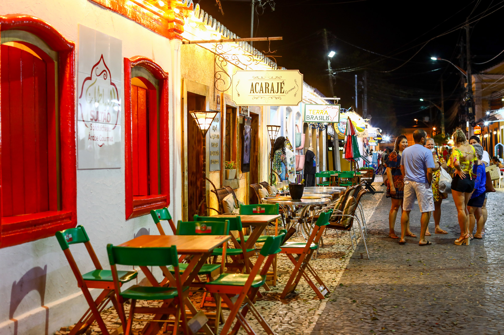
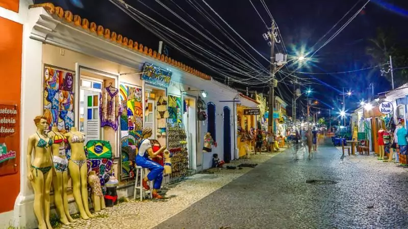

Nuestro tercer dia del viaje a Porto, a la vuelta de la playa, tuvimos una excurión por la tarde a la Passarella do Descobrimento. Caminamos por un par de cuadras donde había tiendas de souvenirs, locales de ropa, lugares de comida y tambíen una muy buena heladería. Cada uno con sus amigos pasó un rato libre, comprando regalos para la familia y cosas para comer.